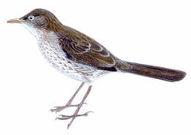
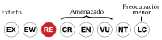
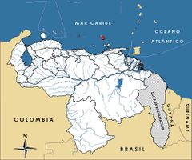

Margarops fuscatus
| Zorzal | |
|---|---|
|  | |
| Riesgo de extinción | |
|
 Extinto a Nivel Regional (UICN) | |
| Clasificación científica | |
| Reino: | Animalia |
| Filo: | Chordata |
| Clase: | Aves |
| Orden: | Anseriformes |
| Familia: | Mimidae |
| Género: | Margarops |
| Especie: | Margarops fuscatus |
| Nombre binomial | |
|
Margarops fuscatus Vieillot, 1808 | |
| Distribución | |
|
 Mapa de distribución de Margarops fuscatus | |
Contenido
Información de Evaluación
- Categoría y Criterio Regional: Extinto a Nivel Regional
- Fecha de Evaluación Regional: 2015
- Evaluadores: Jesús Morales-Campos y Ariany García-Rawlins
- Categoría y Criterio Global: Preocupación Menor
Justificación
Evaluaciones Previas
1999: Sospechado Extinto en Estado Silvestre
2008: Extinto a Nivel Regional (RE)
Información General
Nombres comunes
Zorzal, zorzal pardo, zorzal de ojos perlados, pearly-eyed thrasher.
Notas taxonómicas
Sinónimos
Descripción
Se trata de una paraulata de gran tamaño que mide entre 27 y 30 cm de longitud. Su aspecto es ordinario y poco llamativo, siendo en lo básico de un color uniforme marrón grisáceo opaco, y más pardo oscuro en cabeza y cola. El plumaje del vientre es blanco, espesamente estriado de pardo en garganta y pecho. Su pico es pardo pajizo y los ojos tienen iris blanco, rasgo que le da su nombre común en inglés. Es una especie descrita como un omnívoro agresivo y oportunista, que se alimenta sobre todo de grandes insectos, así como de frutas y bayas, y en ocasiones de lagartijas, ranas, pequeños cangrejos, huevos y pichones de otras aves (Phelps Jr. y Meyer de Schauensee 1979, Hilty y Brown 1986, Hilty 2003, Restall et al. 2007).
Distribución
Margarops fuscatus se distribuye ampliamente en la mayoría de las Antillas, incluyendo Anguila, Antigua, Aruba, Bahamas, Barbados, Dominica, República Dominicana, Guadalupe, Martinica, Montserrat, Puerto Rico, Santa Lucía, San Vicente e Islas Vírgenes, entre otras. También ha sido observada en Curaçao y Jamaica. En Venezuela solo se le conoce en la isla La Horquilla del archipiélago Los Hermanos (Dependencias Federales), el cual está conformado por un grupo de ocho pequeñas islas e islotes, con una superficie de 2,14 km² de norte a sur. Algunos autores mencionan a «La Horquilla» como «La Orchila» o «La Orquilla», en cualquier caso se refieren al islote con mayor superficie del archipiélago Los Hermanos, y en ningún caso a la isla La Orchila, otra de las Dependencias Federales venezolanas cuya separación con respecto a estas islas e islotes es de 188 km. Es probable que su distribución sí pudiera haberse extendido hasta la cercana isla La Blanquilla, localizada a 12,4 km al oeste del archipiélago, y donde predominan zonas áridas con árboles dispersos, el tipo de hábitat mayormente utilizado por la especie, aunque también frecuenta arbustales y diversos tipos de bosques, incluyendo zonas intervenidas como plantaciones de café. No se le considera un ave migratoria (Phelps 1948, Phelps Jr. y Meyer de Schauensee 1979, Hilty y Brown 1986, Hilty 2003, Restall et al. 2007).
- Sistema: Terrestre
- Bioregión:
- Intervalo altitudinal (m): 900
- Endémica: No
Situación
El único reporte y colección de Margarops fuscatus data de más de cien años atrás (1908). En el mismo se resalta que era extraña la presencia de esta ave en una pequeña isla sin fuentes naturales de agua, sin embargo, la población existente parecía establecida de forma adecuada y no se trataba de individuos migratorios o desplazados por tormentas u otras causas. Los animales colectados resultaron ser de menor tamaño que los reportados en otras localidades, y se especuló que los zorzales de La Horquilla y Bonaire pertenecían a una nueva raza sin determinar (Phelps 1948). Ya en los años setenta se le consideraba como Probablemente Extinta en el archipiélago Los Hermanos, categoría que le fue asignada en las primeras ediciones del Libro Rojo de la Fauna Venezolana (Rodríguez, J. P. y Rojas-Suárez 2003). Esta situación contrasta con su realidad global, cuya distribución se estima en más de 20.000 km2, y aunque el tamaño global no se ha cuantificado, se considera que sus poblaciones son grandes y bastante comunes en la mayor parte de su área de distribución, y no enfrenta mayores amenazas. En consecuencia, a escala global se clasifica en la categoría de Preocupación Menor (Rodríguez, J. P. y Rojas-Suárez 2003, IUCN 2014).
- EOO (km2): >20000
- AOO (km2): Temporalmente sin información
- Tendencia Poblacional: Estable
Amenazas
Antiguamente no se reportaron amenazas específicas para Margarops fuscatus, por el contrario, se le consideraba como un ave con gran capacidad de adaptación y de utilización de diversos hábitats. Las causas de su extinción del archipiélago Los Hermanos son en su totalidad desconocidas. En otras islas ha experimentado incrementos poblacionales significativos, lo cual incluso ha llevado a afectar a diferentes especies de aves a las cuales depreda. En apariencia su abundancia varía entre las islas, siendo algo escasa en unas mientras que en otras es un ave frecuente e incluso abundante (Rodríguez, J. P. y Rojas-Suárez 2003, IUCN 2014).
Conservación
No se proponen medidas de preservación relacionadas con esta especie. Su reintroducción en el archipiélago Los Hermanos es poco probable, dada la ausencia de información y lo restringido del hábitat que ocupaba en Venezuela.
Autorías
Autores originales
Franklin Rojas-Suárez
Colaboradores
Ilustrador
Robin Restall
Referencias
- Hilty, S. L. (2003). Birds of Venezuela, second edition. Princeton University Press. Princeton, NJ, USA. 878 pp.
- Hilty, S. L. y Brown, W. L. (1986). A Guide to the Birds of Colombia. Princeton University Press. 836 pp.
- IUCN (2014). The IUCN Red List of Threatened Species. Version 2014.3. Accesible en www.iucnredlist.org.
- Phelps, W. H. (1948). Descripción de seis aves nuevas de Venezuela y notas sobre veinticuatro adiciones a la avifauna del Brasil. Tipografía La Nación. Caracas.
- Phelps Jr., W. H. y Meyer de Schauensee, R. (1979). Una guía de las Aves de Venezuela. Gráficas Armitano. Caracas. 484 pp.
- Restall, R., Rodner, C. y Lentino, M. (2007). Birds of Northern South America, an Identification Guide. Volume 1: Species Accounts. Volume 2: Plates and Maps. Yale University Press. New Haven, USA and London, UK. 880 pp.
- Rodríguez, J. P. y Rojas-Suárez, F. (1999). Libro Rojo de la Fauna Venezolana, segunda edición. PROVITA, Fundación Polar. Caracas. 444 pp.
- Rodríguez, J. P. y Rojas-Suárez, F. (Eds.) (2008). Libro Rojo de la Fauna Venezolana, tercera edición. Provita y Shell Venezuela, S. A. Caracas, Venezuela. 364 pp.
- Rojas-Suárez, F. (2015). Zorzal, Margarops fuscatus. En: J.P. Rodríguez, A. García-Rawlins y F. Rojas-Suárez (eds.) Libro Rojo de la Fauna Venezolana. Cuarta edición. Provita y Fundación Empresas Polar, Caracas, Venezuela. Recuperado de: animalesamenazados.provita.org.ve/content/zorzal Jue, 07/06/2018 - 08:20
- Rodríguez, J. P. y Rojas-Suárez, F. (2003). Libro Rojo de la Fauna Venezolana (2a ed. reim.). Provita, Fundación Polar. Caracas. 472 pp.